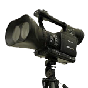

Forts de leurs expériences dans le domaine du film publicitaire et du vidéoclip, les producteurs de BAGAN FILMS, ont à ce jour produit près d'une vingtaine de courts-métrages qui ont rassemblé plus de 80 sélections en festivals dont ceux de Clermont, Nantes, Trouville, Lille, Caen, La Réunion, Cabourg, Metz, Dijon, etc... Mais également des festivals à l'étranger : USA (New York, Los Angeles, Orlando, Cleveland…), Autriche, Grèce, Roumanie, Espagne (Sitges), Italie, Belgique...
La politique de BAGAN FILMS est de développer et d'accompagner les projets des jeunes talents en leur permettant de passer du court au long-métrage, mais également de collaborer avec des réalisateurs plus confirmés qui souhaitent développer des projets de fiction.
En 2010, BAGAN FILMS lance son label spécialisé dans le film de genre : RED BAG qui a pour but de développer des projets aussi bien de courts que de longs.